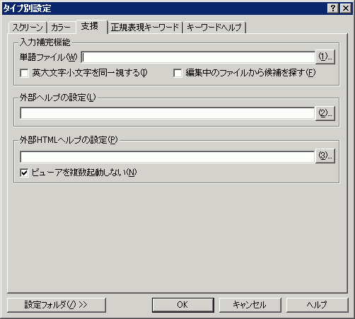

タイプ別設定 『支援』プロパティ
『スクリーン』 『カラー』 『支援』 『正規表現キーワード』 『キーワードヘルプ』

各ファイル名が相対パスの場合、エディタからの相対パスとして認識します。ただし、「..」は使えません。
<入力補完機能>
入力補完機能の詳細については、ここをご覧下さい。
単語ファイル
補完される単語を定義したファイルを設定します。
□英大文字小文字を同一視する
補完候補サーチのとき、英大文字小文字を同一視するかどうかを設定します。
□編集中のファイルから候補を探す
補完候補サーチのとき、そのウィンドウで編集中のデータから、単語を選出して候補に加えます。単語ファイルと併用する事ができます。大文字小文字は、上記のオプションに依存します。
ただし、強調キーワードと同じように英単語に限ります。
<キーワードヘルプ機能>
キーワードヘルプ機能の詳細については、ここをご覧下さい。
□キーワードヘルプ機能を使う
キーワードヘルプ機能を使うかどうかを設定します。
辞書ファイル
キーワードヘルプの辞書ファイルを設定します。
<外部ヘルプの設定>
外部ヘルプの機能を使うとき、ここで指定したWindowsヘルプファイルから選択文字列をキーにしてトピックを検索することができます。
この欄が空欄の場合は、共通設定 『支援』プロパティで設定したヘルプファイルをサーチします。
<外部HTMLヘルプの設定>
外部HTMLヘルプの機能を使うとき、ここで指定したHTMLヘルプファイルから選択文字列をキーにしてトピックを検索することができます。
この欄が空欄の場合は、共通設定 『支援』プロパティで設定したHTMLヘルプをサーチします。
■ビューアを複数起動しない
無効にすると各プロセスごとに別ウィンドウでヘルプを開きます。